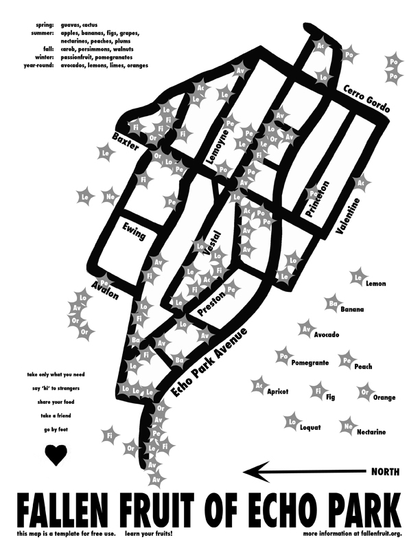
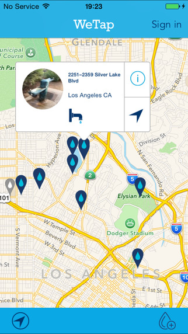
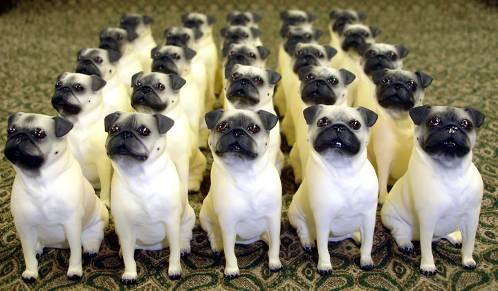
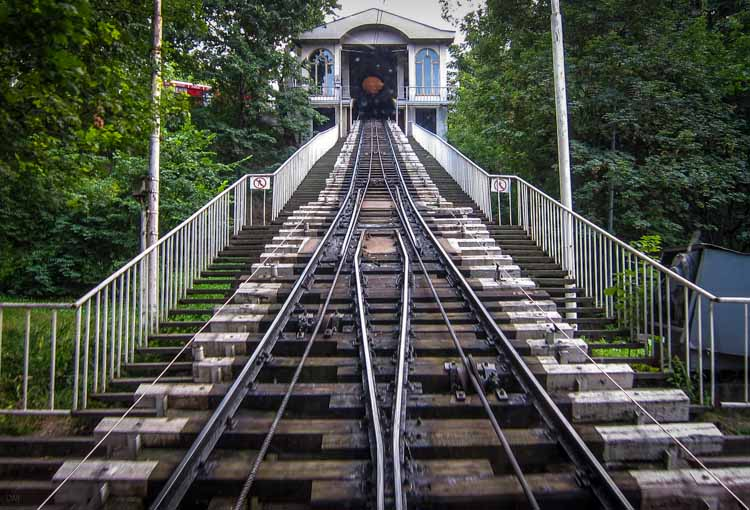
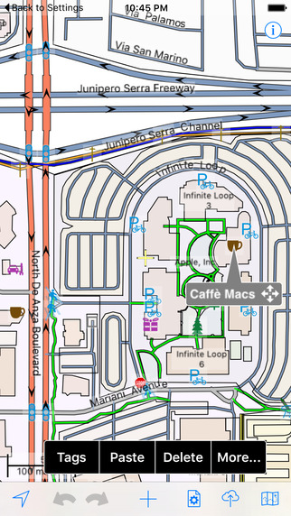
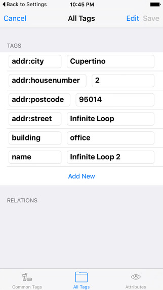

class: center, middle # Crowd Sourcing Niche Maps ### (with OpenStreetMap) --- # Agenda <ol> <li> What do you mean "niche" map? </li> <li> About crowd sourcing. </li> <li> Overview of an approach </li> <li> Workshop! </li> </ol> --- class: middle <h2 style="text-align: left"> What is a </h2> <h1 style="text-align: center; margin-left: -83px;"> "niche" </h1> <h2 style="text-align: right"> map anyway? </h2> --- class: center, middle # It's a map --- class: center, middle # that interests you. <img width="100%" src="images/Map-Cat.jpg" /> --- # A focused map of just... ## parks ## murals ## drinking fountains ## fruit trees ## arcade games --- ## Compare to a general purpose map. - openstreetmap.org - maps.google.com --- class: center, middle # Examples Please! --- # LA Pinball Map <a href="http://pinballmap.com/la/" target="_blank"> pinballmap.com/la </a> A map of pinball machines around the city. <img style="margin-top: 40px;" src="images/la_pinball.jpg" /> --- <div style="width: 50%; float: left"> <h1>Fallen Fruit</h1> <a href="http://fallenfruit.org/map/" target="_blank"> fallenfruit.org/map </a> <p> A map of publicly accessible fruit trees for urban foragers. (Not everything needs to be a web map!) </p> </div>  --- <div style="width: 50%; float: left"> <h1> WeTap</h1> <a href="http://wetap.org" target="_blank"> wetap.org </a> <p> Mobile app to find drinking fountains near you. </p> </div>  --- class: center, middle # Crowd Sourcing? --- class: center, middle (anyone?) --- class: center, middle Getting other people to do the work! --- class: center, middle # When is this a good idea? --- class: center, middle # When is this a bad idea? --- - small dataset - if you need authoritative data - good open data sources already exist --- class: center, middle # OK. OK. OK. --- class: center, middle ## So you want to leverage the power of the masses to contribute to your super cool map.  --- class: center, middle # How do you do that again? --- class: center, middle # Options include... --- ## Handle it totally manually. <pre style="font-size: 16px;"> Dearest Pugsly, I saw your map of fire hydrants in Los Angeles. Great work! I noticed that you missed one on 4th & Main. Can you add it? Sincerely, Archibold </pre> --- class: center, middle # Really not that bad of an option. --- class: middle ## Straight forward ## Don't have to use any service or write any code ## Easy for people to contribute --- class: center, middle # But it doesn't really scale. --- class: center, middle # Fancy Option! --- ## Build something custom - Design an interface for people to contribute - Build a back end service to store this data <img style="width: 100%; float: right;" src='images/cat_coding.jpg'> --- class: center, middle # DEMO! --- ## Upside You can build a really nice interface tailored to your use case. --- ## Downsides - Takes a lot of work (or a lot of $$$) - You have to make sure the server doesn't go down. - Still have the issue of bootstrapping your data set. --- class: center, middle # Another option for getting crowd sourced data... --- class: center, middle # OpenStreetMap! <a href="http://www.openstreetmap.org">www.openstreetmap.org</a> --- class: center, middle ## What is OpenStreetMap? --- class: center, middle (anyone else?) --- class: center, middle ## What do we get from OSM? --- class: center, middle # Much more than just streets and buildings. --- ## Two kinds of data in OSM. - *Where* the thing is. - *What* the thing is. --- # *Where* the thing is... Think latitiude, longitude, size, and shape. We call this the "geometry" of the thing. --- # *What* the thing is... Is it a building, road, drinking fountain, etc? - [Fire Hydrant](https://taginfo.openstreetmap.org/tags/emergency=fire_hydrant) - [Road](https://taginfo.openstreetmap.org/keys/highway) - [Drinking Fountain](https://taginfo.openstreetmap.org/tags/amenity=drinking_water) Represented in OSM using "tags" Thus, one *tags* the *geometry*. --- class: center, middle # Does that make sense? --- class: center, middle ## A single geometry can, and usually does have multiple tags. --- For example a vegetarian restaurant in a wheelchair accessible building that was built in 1932 should have these tags: - a building - a restaurant - vegetarian - wheelchair accessible - built in 1932 --- ### We represent tags precisely as "key=value" pairs. - [building=yes](https://taginfo.openstreetmap.org/tags/building=yes) - [amenity=restaurant](https://taginfo.openstreetmap.org/tags/amenity=restaurant) - [cuisine=vegetarian](https://taginfo.openstreetmap.org/tags/cuisine=vegetarian) - [wheelchair=yes](https://taginfo.openstreetmap.org/tags/wheelchair=yes) - [start_date=1932](https://taginfo.openstreetmap.org/tags/start_date=1932) --- class: middle, center # There are *LOTS* of tags <a href="https://taginfo.openstreetmap.org" target="_blank">taginfo.openstreetmap.org</a> --- ## Some are kind of obscure - [diet=lacto_vegetarian](https://taginfo.openstreetmap.org/tags/diet=lacto_vegetarian) - [crop=tea](https://taginfo.openstreetmap.org/tags/crop=tea) - [funicular=yes](https://taginfo.openstreetmap.org/tags/funicular=yes)  --- class: middle, center # So, putting that all together... --- We can make a crowd sourced map from OSM data provided: - The data exists in OSM. - We know the appropriate tags. --- class: middle, center ### But what if the data isn't already in OSM? --- class: middle, center ### Depending on the data, that's likely. --- class: middle, center # Anyone can contribute to OpenStreetMap. That's the "crowdsourcing" part. --- # *You* can contribute to OpenStreetMap. You can add points directly on the [openstreetmap.org](https://openstreetmap.org) website. Or if you are going to be doing a lot of editing, you might prefer a desktop apps like we have been using for the LA Building Import. --- # Wait. ## You guys know about the LA Building Import right? http://labuildingsimport.com/ (Jon?) --- # Mapping on the go There are mobile apps so you can map things as you walk/bike/hike. ### Android: Vespucci OSM Editor https://play.google.com/store/apps/details?id=de.blau.android ### iOS: Go Mapp! https://itunes.apple.com/us/app/go-map!!/id592990211?mt=8 --- class: middle, center # Demo!   --- ### Getting the data out So, now we are ready to go. --- class: center, middle # Workshop! ---